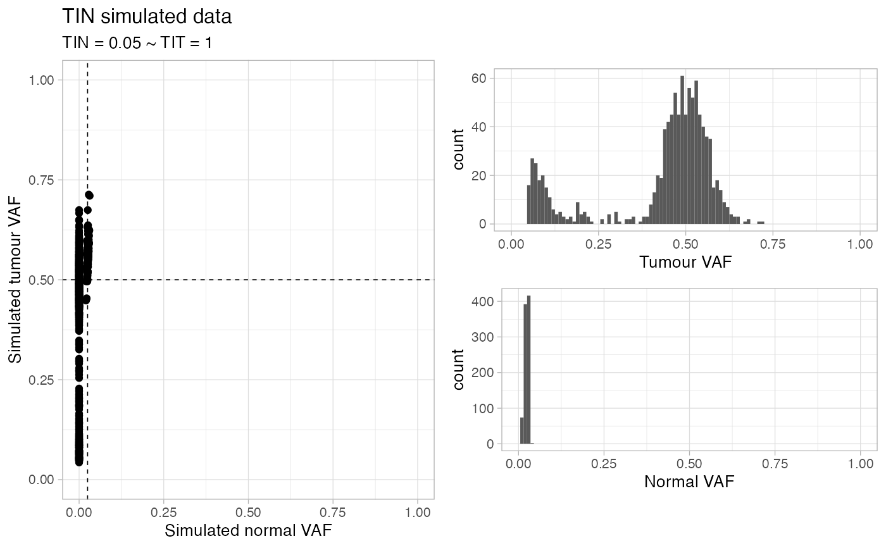

This function simulates a random dataset for TINC analysis,
with mutations and copy number data. Segments are not real, they are assumed
to be constant heterozygous diploid (Major = minor = 1) and span just
mutations (for mappability).
This samples has some noise so that the obtained TIT score might be slightly lower than the required input.
random_TIN( N = 1000, TIN = 0.05, TIT = 1, normal_coverage = 30, tumour_coverage = 120 )
| N | Number of input simulations |
|---|---|
| TIN | TIN - Tumour in normal contamination level. |
| TIT | TIT - Tumour in tumour contamination level (aka tumour purity). |
| normal_coverage | Normal coverage (mean). |
| tumour_coverage | Tumour coverage (mean). |
Tibbles with the data, and a plot.
set.seed(1234) # Default dataset random_TIN() #> ✓ Generated TINC dataset (n = 996 mutations), TIN (0.05) and TIT (1), normal and tumour coverage 30x and 120x. #> Warning: Removed 2 rows containing missing values (geom_bar). #> Warning: Removed 2 rows containing missing values (geom_bar). #> $data #> # A tibble: 996 × 14 #> chr from to ref alt simulated_clust… n_tot_count t_tot_count #> <chr> <int> <dbl> <chr> <chr> <chr> <int> <int> #> 1 chr18 72719802 7.27e7 A T C1 38 129 #> 2 chr20 46593433 4.66e7 C A C1 26 111 #> 3 chr4 161683258 1.62e8 C A C1 36 141 #> 4 chr4 57619758 5.76e7 T G C1 31 113 #> 5 chr10 34776992 3.48e7 G G C1 33 115 #> 6 chr22 49922927 4.99e7 A C C1 28 112 #> 7 chr8 34682839 3.47e7 A G C1 26 123 #> 8 chr17 39136435 3.91e7 T G C1 30 133 #> 9 chr17 14904298 1.49e7 A C C1 30 143 #> 10 chr13 45849845 4.58e7 T C C1 34 130 #> # … with 986 more rows, and 6 more variables: n_alt_count <dbl>, #> # t_alt_count <dbl>, n_ref_count <dbl>, t_ref_count <dbl>, sim_t_vaf <dbl>, #> # sim_n_vaf <dbl> #> #> $cna #> # A tibble: 996 × 6 #> chr from to ref Major minor #> <chr> <dbl> <dbl> <chr> <dbl> <dbl> #> 1 chr18 72719801 72719804 A 1 1 #> 2 chr20 46593432 46593435 C 1 1 #> 3 chr4 161683257 161683260 C 1 1 #> 4 chr4 57619757 57619760 T 1 1 #> 5 chr10 34776991 34776994 G 1 1 #> 6 chr22 49922926 49922929 A 1 1 #> 7 chr8 34682838 34682841 A 1 1 #> 8 chr17 39136434 39136437 T 1 1 #> 9 chr17 14904297 14904300 A 1 1 #> 10 chr13 45849844 45849847 T 1 1 #> # … with 986 more rows #> #> $plot  #>